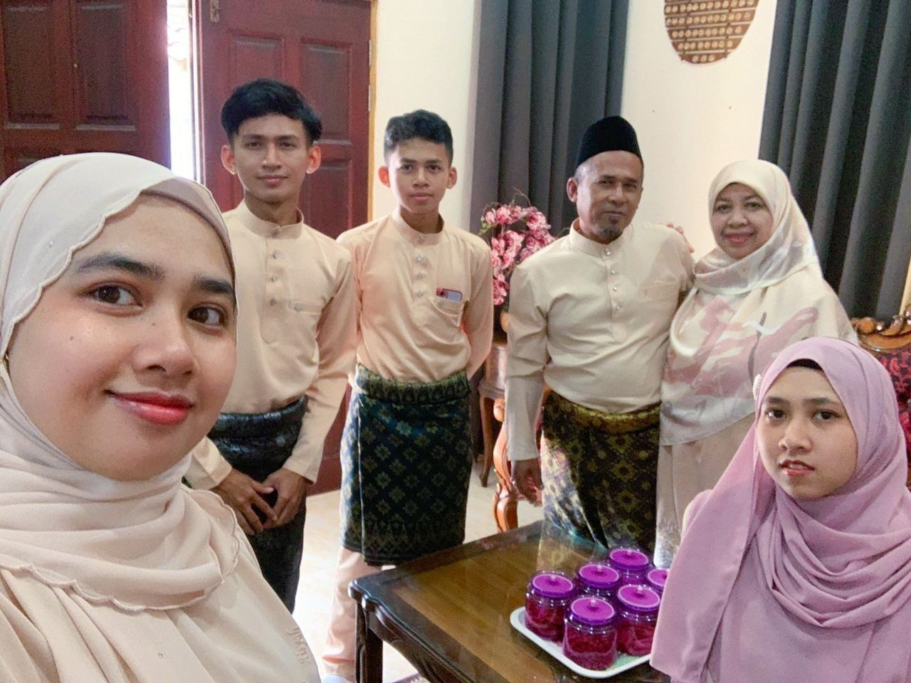
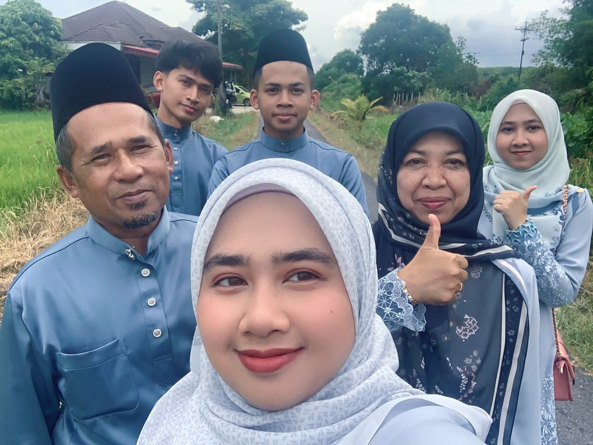
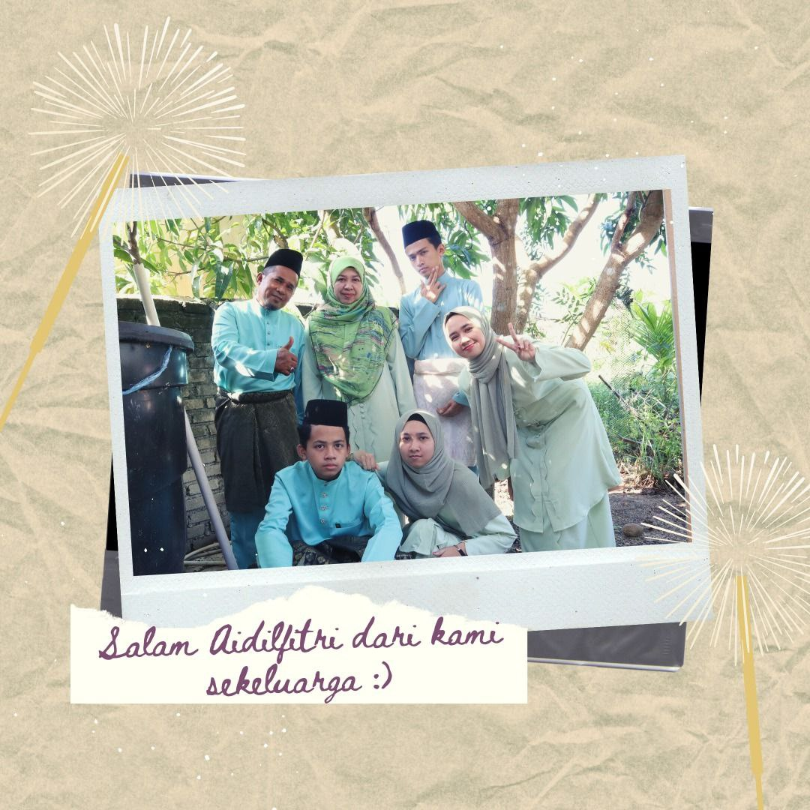
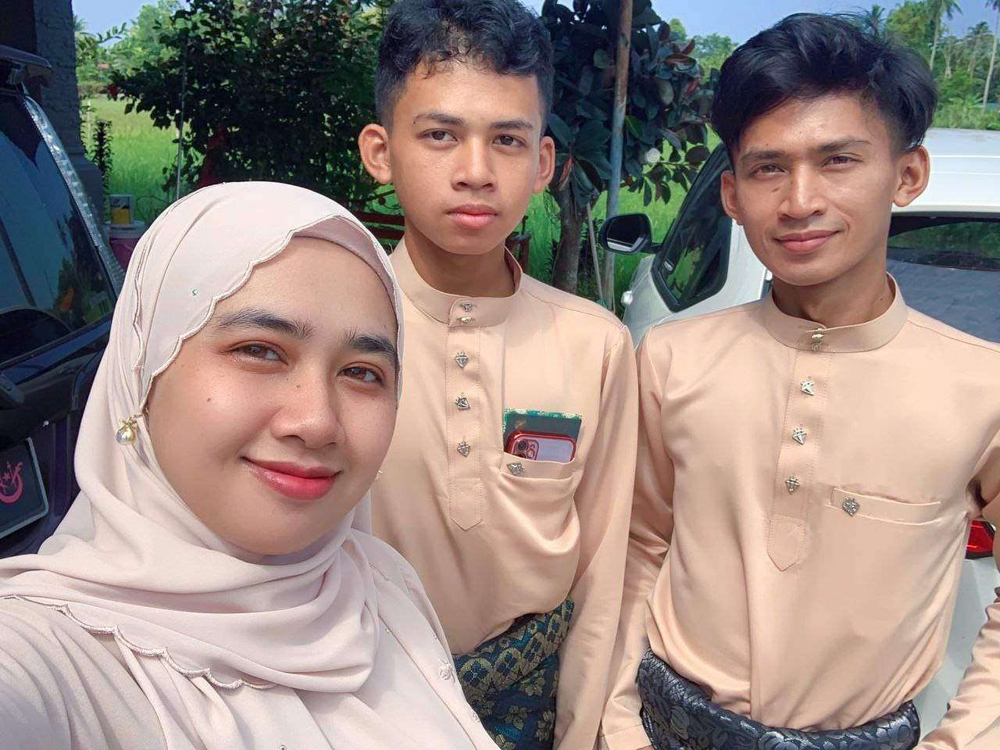

I am Nur Najiha Binti Anuar a student from Uitm Kedah.
Currently studying library management and this is my personal website.
I make this website for this individual assignment of subject IML470
My Family
Click on the play button to play a sound:
Family is the cornerstone of my life, providing a foundation of love, support, and shared experiences. I am fortunate to be part of a close-knit family that has been a constant source of inspiration and guidance.


At the heart of my family are my parents, whose unwavering dedication and hardwork have shaped our lives. My father, Anuar Bin Ahmad, is a headmaster at SK Perah, Tok Uban, Pasir Mas, whose perseverance and commitment to his profession have always been admirable. He has taught me the value of discipline and the importance of maintaining a strong work ethic.
My mother, Mahmudah Binti Abdul Malik, is a teacher at SMK Mahmud Mahyidin, whose nurturing nature and unconditional love have been the bedrock of our family. Her wisdom and kindness have always been a guiding light for us.


I have 4 siblings include me, each of them plays a unique and special role in my life. My sister, Nur Hannan Binti Anuar, is the oldest of my siblings who is 25 years old. Meanwhile, my brother Yasin Muzakkir Bin Anuar, 24 years old is a second older. I am a middle child and my younger brother Yasin Mujahid Bin Anuar 17 years old is the youngest of my sibling. Growing up together, we shared countless memories, from playful childhood antics to supporting each other through life’s challenges. Our bond is a testament to the strength and resilience that comes from having a loving sibling by your side.